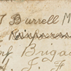
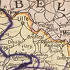
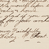

Sister Anne Donell
27 December 1915, Lemnos island
Christmas Day celebrations at Third General Hospital
Time : 1.31
Sister Anne Donell
2 January 1918, Ypres
Bombings and homesickness at a casualty clearing station
Time : 4:54
Sister Anne Donell
February 1919
Crossing the Equator on ship homeward bound
Time : 2.39

Bill Burrell
Thursday 20 September 1917, Ypres
The stretcher-bearer’s experience struggling to survive the artillery barrage
Time : 2.50
Ellis Silas
January 1915, on the troopship Ceramic
Adapting to military life and the routines on board a troopship.
Time : 2.02
Ellis Silas
April 1915
On the way to Gallipoli
Time : 1.29
Ellis Silas
25 April 1915, Gallipoli
Landing at Gallipoli
Time : 3.47
Frank Hurley
16 February 1918, Middle East
Experiencing flying for the first time
Time : 3.07

Jim Marshall
13 September 1916
Leaving home for war - part 1
Time : 2.11
Jim Marshall
13 September 1916
Leaving home for war - part 2
Time : 2.19
Jim Marshall
24 November 1916, London
On leave in London
Time: 3.34

Jack Hutton
January 1917, France
A laconic look at the horrors of trench warfare and the cold
Time : 5.52
Langford Colley-Priest
July 1916, Fromelles and the Somme
Daily life in the trenches
Time : 3.48
Langford Colley-Priest
November, 1916
Stretcher-bearer in the trenches
Time : 2.54
Louis Vasco
25 June 1917, France
Sharing his love of France with his wife
Time : 4.37
Louis Vasco
20 June 1918, England
A study in blues
Time : 1.18
Louis Vasco
30 June 1918, England
One of his last letters home to his wife
Time : 1.31

Maurice Evans
November 1916, Middle East
My horse Bernard and me
Time : 2.05

Wesley Choat
April 1919
Letter to the Principal Librarian
Time : 1.26
Wesley Choat
La Belle France
Time : 1.54
Wesley Choat
April 1919, Germany
Experience as a prisoner of war
Time : 2.05
The Sydney and the Emden battle
9th November, 1914
Time : 5.54